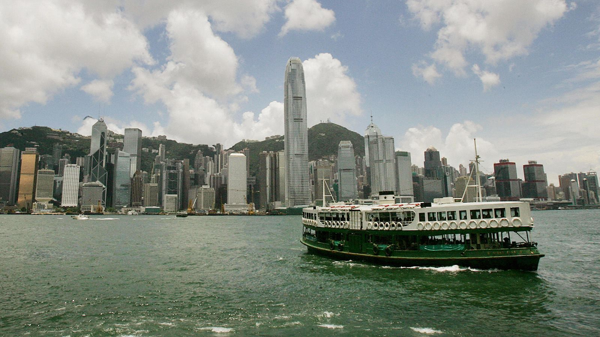
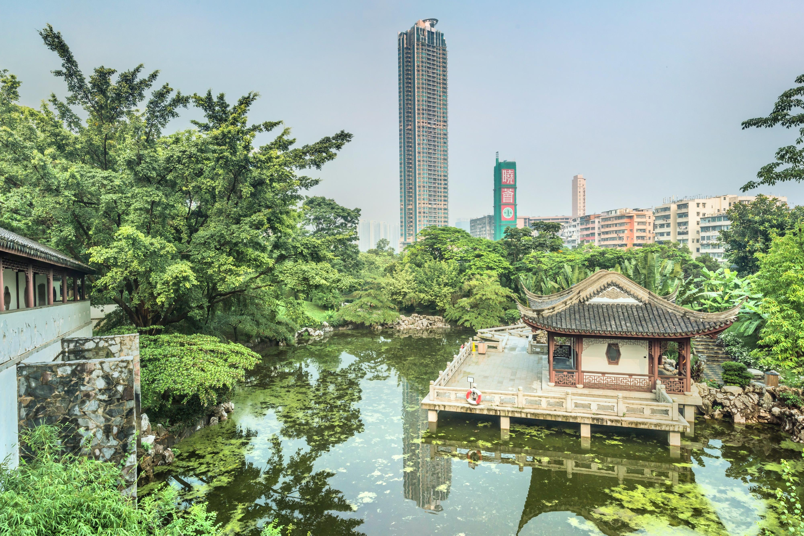
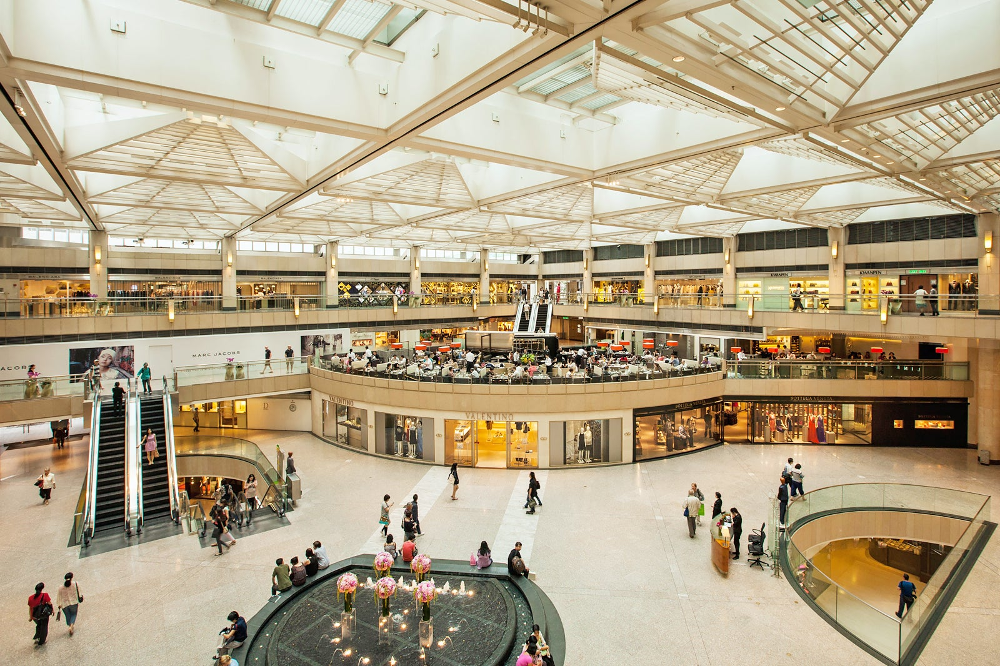
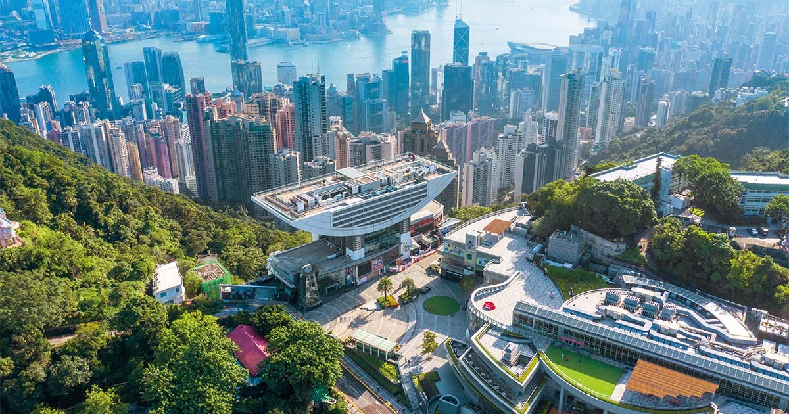
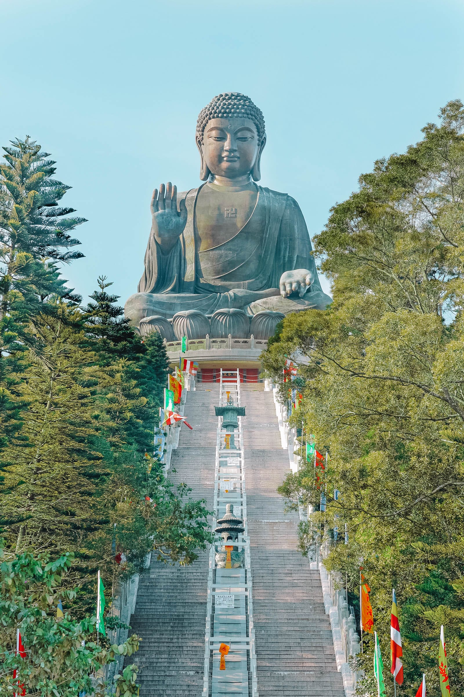

|  | The Star Ferry (Chinese: 天星小輪) is a passenger ferry service operator and tourist attraction in Hong Kong.Its principal routes carry passengers across Victoria Harbour, between Hong Kong Island, and Kowloon. The service is operated by the Star Ferry Company, which was founded in 1888 as the Kowloon Ferry Company, and adopted its present name in 1898. With a fleet of twelve ferries, the company operates two routes across the harbour, carrying over 70,000 passengers per day, or 26 million per year. Even though the harbour is crossed by railway and road tunnels, the Star Ferry continues to provide a scenic yet inexpensive mode of harbour crossing. The company's main route runs between Central and Tsim Sha Tsui. |
|  | It is an attractive park centred around the site of the 19th-century Qing Dynasty fort which became the infamous Kowloon Walled City in the 20th century. The park is a tranquil place to enjoy beautiful gardens while learning important local history at the same time. Once dubbed the most densely populated place on Earth, the 2.7-hectare Kowloon Walled City was home to some 50,000 people at its height in 1990. Demolished in 1993, what sits in its place now is a sprawling, well-manicured green space with artifacts and exhibits illustrating the city's storied past. |
|  | Famed as a shopping paradise, Hong Kong is famous for its great variety of fashion accessories, local arts and crafts, tea, jade, and jewelry. Shopping in Hong Kong has many advantages such as low prices, a seemingly endless variety, and high quality. |
|  | "The Peak", as it is known locally to the Hong Kong people, is the most famous attraction in the region for many reasons. First, it is the perfect spot to experience the greatest views over the world-famous Victoria Harbour, which dazzle both at night and in the daytime. The venerable Peak Tram is, as most passengers agree, the only way to truly experience the beauty of Hong Kong's natural wonders. Tens of millions of people from every corner of the globe have taken the ride, which affords a uniquely spectacular perspective of the city. |
|  | The majestic outdoor bronze Buddha statue sits solemnly atop the peak of Mount Muk Yue. It is seated south and facing North towards Beijing, the capital of China. Divided into two parts, the statue’s body is 26.4m tall and 34m in total measuring from the lotus throne and the base. It was cast with 250 tonnes of bronze and built over 12 years. The statue was modelled after Siddhartha, who achieved enlightenment under the Bodhi tree. The “imparting fearlessness” mudra of the right hand indicates compassion to save all sentient beings from their sufferings; the “fulfilling wishes” mudra of the left hand resting on the lap, implies the vow to grant blessing and happiness to all. |